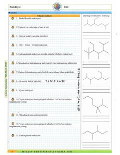

MSKimyo fanidan milliy sertifikat imtihonlari uchun nazariy va amaliy qo'llanma.
Ushbu qo'llanma kimyo fanidan milliy sertifikat imtihonlariga tayyorgarlik ko'rayotgan abituriyentlar uchun mo'ljallangan. Unda alkanlar, sikloalkanlar va turli kimyoviy reaksiyalar bo'yicha nazariy ma'lumotlar hamda amaliy topshiriqlar jamlangan.